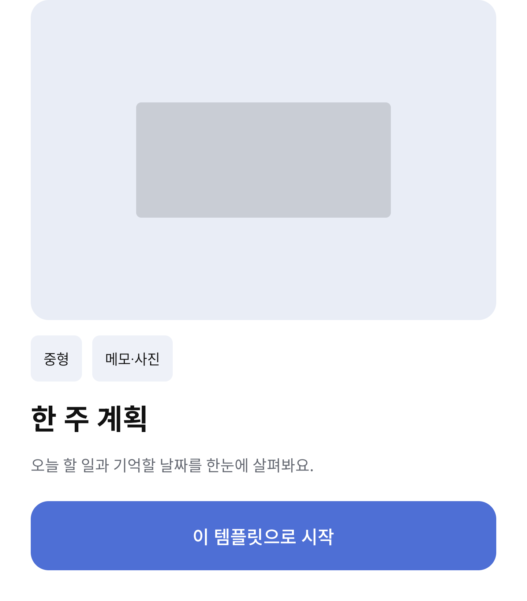
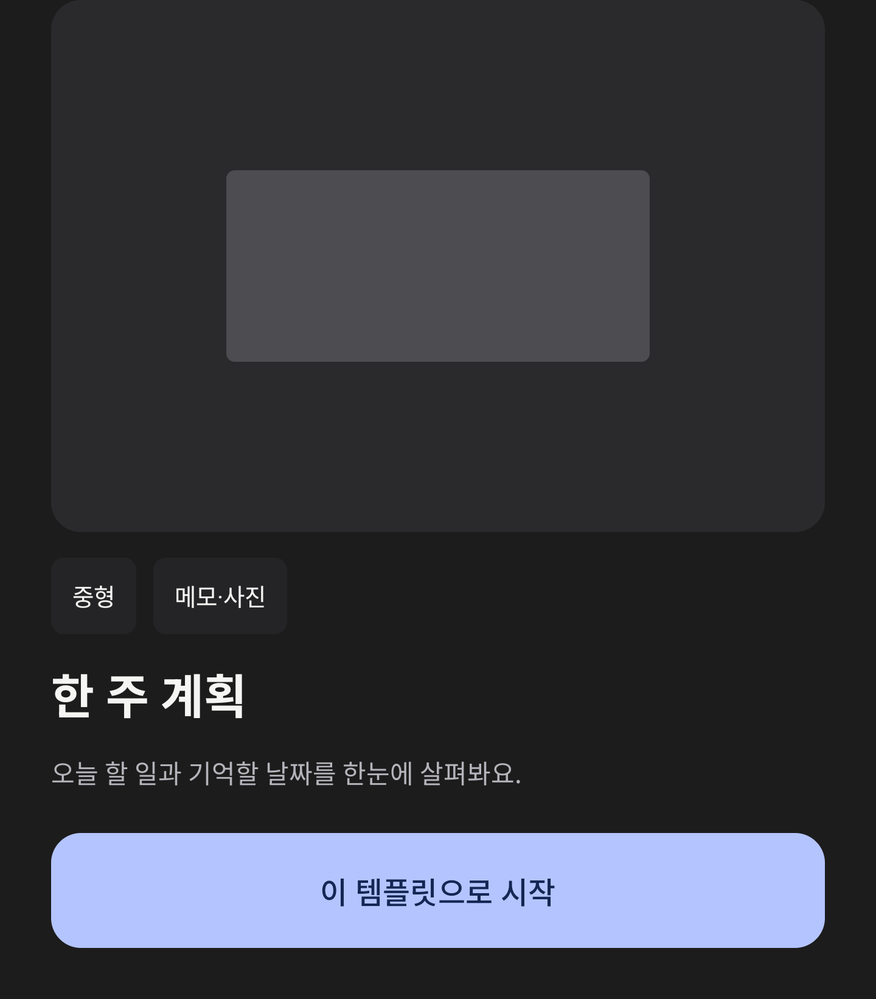

템플릿 상세와 시작
템플릿
- 화면 ID
template-detail- 모듈
- MyWidget :app
- 진입 경로
- 템플릿 갤러리 → 타일
- 구현 방식
- Jetpack Compose
- 주요 상태
- 상세 보기
- 만드는 중
- 생성 오류·재시도
- 닫기·뒤로가기
- 테마
- 라이트
- 다크
- 반복 UI
- 콘텐츠 높이 시트
- 고정 CTA
- 진행 잠금
- 평가
- 만드는 중 Back·드래그·바깥 탭을 차단하고 미리보기를 유지합니다.
- 적용 상태
- 기존 구조 사용
- 코드 조사
- 코드 조사 완료
- 화면 확인
- 실제 앱 경로 확인
- 실행 근거
- API 35 기본 560dpi, 411dp 폭, fontScale 1.0에서 라이트·다크 Compose 샘플을 네이티브 캡처했습니다. 범위는 선택한 템플릿 상세입니다. API 34 QaAppDesignJourneyTest에서 앱의 갤러리 경로를 구성해 정보·추억 카테고리를 바꾸고, D-Day와 사진 템플릿 상세 및 이미지 로딩을 확인했습니다.
- 비고
- 프리뷰 우선 콘텐츠 높이와 스튜디오 비율 높이는 서로 다른 계약입니다. 고정 시작 버튼은 스크롤을 요구하지 않도록 여정 테스트를 맞췄습니다.
구현 위치
TemplateDetailSheet·MyWidget/app/src/main/java/com/mywidget/editor/feature/template/TemplateScreen.kt:241
사용 컴포넌트
Android 네이티브 예시
아래 캡처에 표시된 상태와 기기 조건을 확인했습니다.

411 × 891 dp · 560 dpi · 글꼴 1배 · API 35 · ko-KR
캡처 기준 HEAD
ff118cc8d · 소스 지문 73da2a0be891 · 2026-11-13T10:23:11.274577Z
411 × 891 dp · 560 dpi · 글꼴 1배 · API 35 · ko-KR
캡처 기준 HEAD
ff118cc8d · 소스 지문 73da2a0be891 · 2026-11-13T10:23:11.274577Z